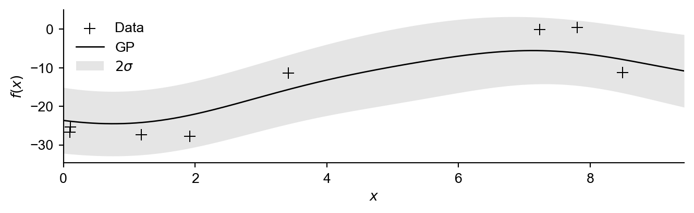
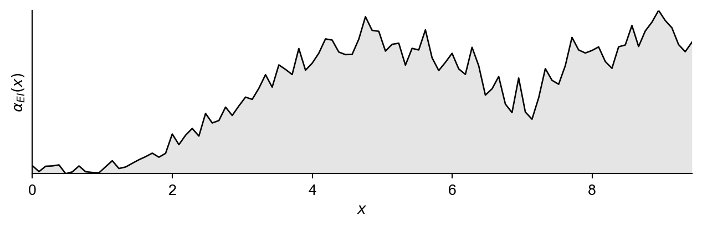

Definition of underlying function…
def f(x):
return 2.4*np.sin(2.8*x) - ((x-3.5*np.pi) ** 2)/4 + 3.8*np.cos(1.7*x) - (x**2)/16 + np.random.normal(0,2)I have reworked some notes from (Garnett 2023) regarding noisy-expected improvement. Please refer to the original text for a more detailed explanation.
The assumptions that hold for the expected improvement utility function do not hold when measurements have noise.
We really want to find the point where the signal is optimised (Jones, Schonlau, and Welch 1998).
How do you determine if a measurement is signal or noise?
We begin by specifying an underlying objective function, which we consider unknown, shown in Figure 1. We have access to observations which we assume contain normally distributed noise.
def f(x):
return 2.4*np.sin(2.8*x) - ((x-3.5*np.pi) ** 2)/4 + 3.8*np.cos(1.7*x) - (x**2)/16 + np.random.normal(0,2)
We first begin by motivating the usual expected-improvement criteria. We are looking to maximise the expected increase between the of the maximum of the mean of the resulting Gaussian process after making an observation at \(x\) and the maximum of the current Gaussian process over potential observations \(y\) which are Gaussian distributed as a result of our \(\mathcal{GP}\) model. \[\alpha_{EI}(x;\mathcal{D}) = {\color{red}\int} \left[{\color{green}\max \mu_{\mathcal{D}'}} - {\color{blue}\mu^*}\right]{\color{red}\mathcal{N}(y;\mu,s^2)\text{d}y} \tag{1}\]
By formulating the expression with respect to the improvement in the mean of the current and subsequent Gaussian process models, we are expressing our interest in optimising the signal and not the noise or values of specific observations.
Important: Given a hypothetical observation \(y\), the value of the mean of the resulting Gaussian process \(\mu_{\mathcal{D}'}\) at given set of potential locations \(\mathbf{x}'\) is
\[ \mu_{\mathcal{D}'} = \mu_{\mathcal{D}} + \frac{K_\mathcal{D}(\mathbf{x}',x)}{s}\frac{y-\mu}{s},\]
where \(\mu\) and \(s^2\) are the mean and standard deviation of the distribution of potential values \(y\) could take.
When we express this distribution in terms of the standard normal distribution \(z := \mathcal{N}(0,1)\), we have \(y = \mu + sz\) and as a result
\[ \mu_{\mathcal{D}'} = \mu_{\mathcal{D}}(\mathbf{x}') + \frac{K_\mathcal{D}(\mathbf{x}',x)}{s}z.\]
Putting this back into Equation 1, we now only have to take the expectation over the standard normal distribution resulting in the following.
\[\alpha_{EI}(x,\mathcal{D}) = \int \max_{\mathbf{x}'} \left(\mu_{\mathcal{D}}(\mathbf{x}') + \frac{K_\mathcal{D}(\mathbf{x}',x)}{s}z \right)\phi(z)\;\text{d}z - \mu^* \tag{2}\]
To begin with we will sample some initial data:
# our initial dataset
x_data = np.random.uniform(0,3*np.pi,8)
y_data = np.array([f(x_i) for x_i in x_data])class ExactGPModel(gpytorch.models.ExactGP):
def __init__(self, train_x, train_y, likelihood):
super(ExactGPModel, self).__init__(train_x, train_y, likelihood)
self.mean_module = gpytorch.means.ConstantMean()
self.covar_module = gpytorch.kernels.ScaleKernel(gpytorch.kernels.RBFKernel())
def forward(self, x):
mean_x = self.mean_module(x)
covar_x = self.covar_module(x)
return gpytorch.distributions.MultivariateNormal(mean_x, covar_x)
def build_GP(x,y,its):
likelihood = gpytorch.likelihoods.GaussianLikelihood()
model = ExactGPModel(x, y, likelihood)
model.train()
likelihood.train()
optimizer = torch.optim.Adam(model.parameters(), lr=0.1) # Includes GaussianLikelihood parameters
mll = gpytorch.mlls.ExactMarginalLogLikelihood(likelihood, model)
for i in range(its):
optimizer.zero_grad()
output = model(x)
loss = -mll(output, y)
loss.backward()
optimizer.step()
return model,likelihood
model,likelihood = build_GP(x_data,y_data,2000)
GP = {'model':model,'likelihood':likelihood}Figure 2 shows this data with an initial Gaussian process (importantly assuming in-exact observations).

Now we will naively construct Equation 2 using 40 samples from the standard normal distribution, and naively calculate an approximation to the inner maximisation by evaluating at 100 location throughout the space (which defines our vector \(\mathbf{x}' \in\mathbb{R}^{100}\)) and returning the max value from these.
def noisy_EI(x,GP):
model = GP['model']; model.eval()
likelihood = GP['likelihood']; likelihood.eval()
N = torch.distributions.Normal(0,1)
predicted_output = likelihood(model(x))
mean = predicted_output.mean
var = predicted_output.variance
x_prime_vals = torch.linspace(0,3*np.pi,100).reshape(-1,1)
mu_vals = likelihood(model(x_prime_vals)).mean
cov_vals = model.covar_module(x_prime_vals,x)
integral = 0
samples = 2000
z_vals = N.sample((samples,1))[:,0]
for z in z_vals:
integral += torch.max(mu_vals + (cov_vals*z)[:,0])
return integral / samplesNow if we plot this function alongside the time taken to evaluate the acquisition function at 100 locations.
NAIVE TIME TAKEN: 26.5347 s. AVERAGE TIME PER EVALUATION: 0.2653 s
Important: For a fixed set of ‘improvement locations’ \(\mathbf{x}'\), the resulting posterior mean at each location can be interpreted as a 1D line as a function of \(z\):
\[\mu_{\mathcal{D}'}(z|x') = \mu_{\mathcal{D}}(x') + \frac{K_{\mathcal{D}}(x',x)}{s}z \quad \forall x'\in \mathbf{x}' \tag{3}\]
Therefore finding the inner maximum new posterior mean as a function of \(z\) can be translated to calculating the upper envelope of a set of lines. This upper envelope represents for a given \(z\), the maximum posterior mean across all of the locations in \(\mathbf{{x}'}\). The main idea is to remove the inner \(\max\) operator and replace it with something more tractable enabling analytical integration.
\[\int \max \left[\text{lines} (z)\right] \phi(z) \;\text{d}z \rightarrow \int \text{upper envelope} (z) \phi(z) \;\text{d}z \rightarrow \text{analytical solution}\]
Which has an analytical solution for a piecewise linear upper envelope. To do so:
n = 100
a = np.random.uniform(0,0.2,n)
b = np.random.uniform(-10,10,n)We will first get rid of any lines that are definitely dominated between -5 and 5 (the range of \(z\) values we are interested in). I’m not going to explain this too much but it’s quite easy to derive this condition.
l_store = []; u_store = []
zl = -5; zu = 5
for i in range(len(a)):
l = a[i]*zl + b[i]
u = a[i]*zu + b[i]
l_store.append(l)
u_store.append(u)
L_i = np.argmax(l_store)
U_i = np.argmax(u_store)
del_i = []
for i in range(len(a)):
if l_store[i] < l_store[U_i] and u_store[i] < u_store[L_i]:
del_i.append(i)
a = np.delete(a,del_i)
b = np.delete(b,del_i)Now we will sort the lines by gradient
sorted_indices = np.argsort(a)
a = a[sorted_indices];
b = b[sorted_indices]; Then initialise the set of dominated lines (a and b values respectively), respective intervals, and the current largest \(z\) on the envelope.
dom_a = []
dom_b = []
interval_store = []
envelope_z = -5For each line in order of increasing gradient (here we start with the first line indexed at \(j=0\))
j = 0 Add the line to the set of dominating lines
dom_a.append(a[j])
dom_b.append(b[j])Calculate the \(z\) intercept of the line with all lines of a larger gradient. As we only calculate this intersection with these remaining lines, the overall algorithm has \(\mathcal{O}(n\log n)\) complexity.
z_intercept_store = []
for i in range(j+1,n):
z_intercept = (dom_b[-1] - b[i])/(a[i] - dom_a[-1])
z_intercept_store.append(z_intercept)The intercept with the lowest value of \(z\) will be a potential vertex for the envelope, but we must check that there are no lines above it.
To do so we calculate the \(\mu\) value of each line at \(min({\mathbf{z})}\).
mu_vals = []
z_intercept = np.min(z_intercept_store)
mu_intercept = dom_a[-1]*z_intercept + dom_b[-1]
for i in range(j+1,n):
mu_vals.append(a[i]*z_intercept + b[i])
If the maximum value of \(\mu\) is on the dominating line, and this value is larger than the current largest \(z\) value in the envelope…then we know this must lie on the upper envelope. Otherwise forget about this dominating line by setting it’s definition to None.
if abs(mu_intercept-np.max(mu_vals)) < 1e-5 and z_intercept > envelope_z:
interval_store.append([envelope_z,z_intercept])
envelope_z = z_intercept
else:
dom_a[-1] = None
dom_b[-1] = None
interval_store.append([None,None])Now we can plot the interval we have just calculated.
If we now repeat this procedure starting with the line with the next largest gradient we can search for next vertex on the upper envelope.
def upper_env(a,b):
l_store = []; u_store = []
zl = -5; zu = 5
for i in range(len(a)):
l = a[i]*zl + b[i]
u = a[i]*zu + b[i]
l_store.append(l)
u_store.append(u)
L_i = np.argmax(l_store)
U_i = np.argmax(u_store)
del_i = []
for i in range(len(a)):
if l_store[i] < l_store[U_i] and u_store[i] < u_store[L_i]:
del_i.append(i)
a = np.delete(a,del_i)
b = np.delete(b,del_i)
n = len(a)
sorted_indices = np.argsort(a)
a = a[sorted_indices]
b = b[sorted_indices]
dom_a = []
dom_b = []
interval_store = []
envelope_z = -5
for j in range(n):
dom_a.append(a[j])
dom_b.append(b[j])
z_intercept_store = []
for i in range(j+1,n):
z_intercept = (dom_b[-1] - b[i])/(a[i] - dom_a[-1])
z_intercept_store.append(z_intercept)
mu_vals = []
try:
z_intercept = np.min(z_intercept_store)
except:
interval_store.append([envelope_z,5])
break
mu_intercept = dom_a[-1]*z_intercept + dom_b[-1]
for i in range(j+1,n):
mu_vals.append(a[i]*z_intercept + b[i])
if abs(mu_intercept-np.max(mu_vals)) < 1e-9 and z_intercept > envelope_z:
interval_store.append([envelope_z,z_intercept])
envelope_z = z_intercept
else:
dom_a[-1] = None
dom_b[-1] = None
interval_store.append([None,None])
del_store = []
for i in range(len(dom_a)):
if dom_a[i] == None:
del_store.append(i)
dom_a = np.delete(dom_a,del_store)
dom_b = np.delete(dom_b,del_store)
interval_store = np.delete(interval_store,del_store,axis=0)
zl = -5
zu = 5
interval_store[interval_store > zu] = zu
interval_store[interval_store < zl] = zl
return dom_a,dom_b,interval_store
The expected value over \(z\) (integrating over potential experimental outputs) of this upper envelope (which we use inplace of the inner \(\max\) operator), where \(z \sim \mathcal{N}(0,1)\) is given by:
\[ \sum_i \int^{c_{i+1}}_{c_{i}}(a_iz+b_i)\phi(z) \; \text{d}z \rightarrow \sum_i b_i [\Phi (c_{i+1})-\Phi(c_i)] + a_i[\phi(c_i) - \phi(c_{i+1})]\]
where \(\Phi\) is the standard cumulative normal probability function, \(\phi\) is the standard normal probability function, \(c\) are the \(z\) values of the upper envelope intervals, and \(a\) and \(b\) are the gradient and intercept of upper envelope intervals corresponding to Equation 3.
Intuitively, we are solving the expected improvement integral analytically for each line segement within the upper envelope of lines (which we use as it is equivalent to the inner \(\max\) operator).
For the sake of completeness we will wrap this up into an acquisition function, and run a basic Bayesian optimisation loop
def noisy_EI_lines(x,GP):
with torch.no_grad(), gpytorch.settings.fast_pred_var():
model = GP['model']
likelihood = GP['likelihood']
model.eval()
likelihood.eval()
x_prime_vals = torch.linspace(0,3*np.pi,200)
predicted_output = likelihood(model(x))
mean = predicted_output.mean.item()
var = predicted_output.variance.item()
a = []
b = likelihood(model(x_prime_vals)).mean.numpy()
for x_prime in x_prime_vals.reshape(-1,1):
conc_x = torch.cat((x,x_prime))
covar = likelihood(model(conc_x)).covariance_matrix
a.append((covar[0,1]/var).item())
dom_a,dom_b,interval_store = upper_env(np.array(a),np.array(b))
N = torch.distributions.Normal(0,1)
sum = 0
for i in range(len(interval_store)):
c_i = torch.tensor(interval_store[i,0])
c_i1 = torch.tensor(interval_store[i,1])
sum += dom_b[i]*(N.cdf(c_i1) - N.cdf(c_i)) + dom_a[i]*(np.exp(N.log_prob(c_i)) - np.exp(N.log_prob(c_i1)))
return sum.item()NAIVE TIME TAKEN: 26.0427 s. AVERAGE TIME PER EVALUATION: 0.2604 s
UPPER ENVELOPE TIME TAKEN: 4.6367 s. AVERAGE TIME PER EVALUATION: 0.0464 s